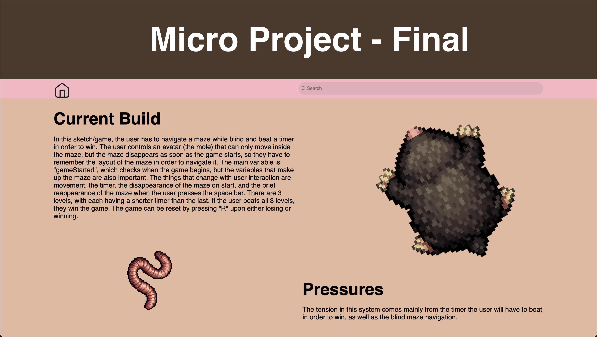
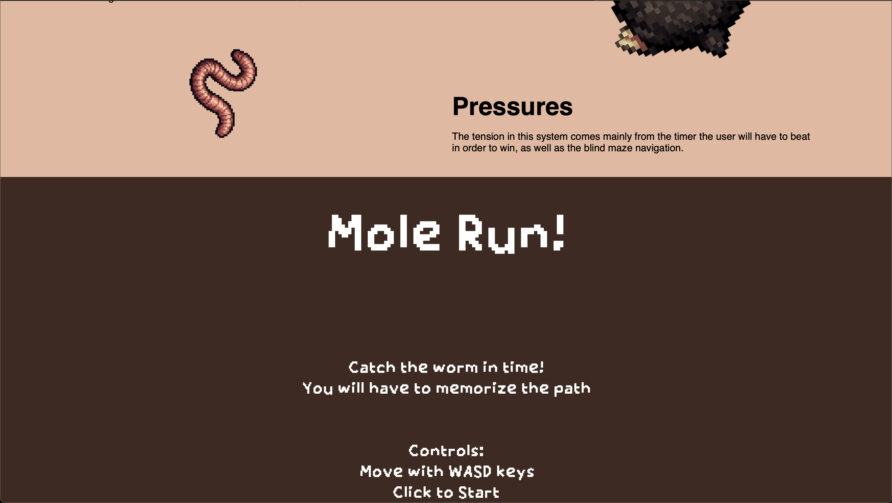

For this implementation phase, I converted my figma prototype into HTML and CSS using a plugin. The resulting code was pretty messy and required a lot of cleanup. I had to adjust all the CSS properties to make the page responsive by replacing hardcoded pixel values with relative units, which took a lot of time. I also had to make some edits to the HTML code. I then added in some color for each section of the page as well as two images from my microproject for additional styling. The page works structurally as far as scrolling and resizing of the body text, search field, images, banner, and nav bar. Unfortunately, the title text on the top banner does not resize properly and cuts into the other sections when the window size changes. One of the images also ends up overlapping with the body text when the window size is reduced. The microproject sketch itself also does not resize properly but that is also because of the way that was coded. One other thing that is missing that I could not figure out yet is the icon for the search bar. The Figma logic holds in the placement of each element on the page but breaks when resizing the window, especially with the sketch. I also was not sure how to add in the interactivity of the home button or of the search bar yet.
It was fairly daunting to look at the wall of code that was generated from the Figma plugin and figure out how to clean it up and make it work. I had to spend a lot of time reading through and figuring everything out so that I could make the necessary edits to make it responsive. At first, the page did not take up the entire screen but the sketch did, so I had to match them up and change the placement of body text sections. Another problem I had was that when the user clicks anywhere on the page, the microproject game starts, which I would like to not happen. My interface definitely assumes that the page will be opened in full screen landscape mode on a desktop and does not do very well in smaller sizes.
For the next iteration I need to work on the resizing aspect of my interface so that every element resizes properly and does not overlap with others. I think I should also try to add in the interactivity of at least the home button to return to the main sketchbook page.I also need to figure out how to make the search bar icon visible, and how to make it so that the game only starts if the user clicks inside the microproject section. Finally, I might consider adding different/additional styling to the page beyond just color.